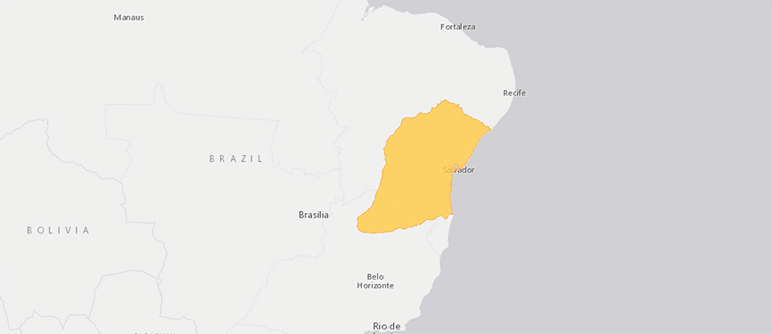
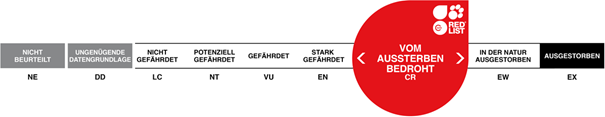
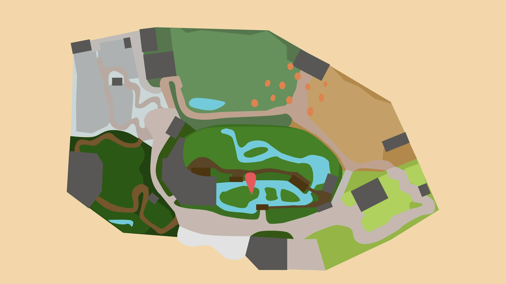

GELBBRUSTKAPUZINER
CEBUS XANTHOSTERNOS
Gelbbrustkapuziner gehören zu den meistbedrohten Affenarten der Welt. Der Hauptgrund ist die grossflächige Zerstörung der Regenwälder entlang der Atlantikküste Brasiliens. Der Bestand ist in den letzten Jahren auf wenige hundert Tiere zusammengebrochen. Einige Gelbbrustkapuziner leben zwar in Schutzgebieten. Diese sind aber sehr klein und für ein längerfristiges Überleben nicht wirklich geeignet. Die brasilianische Naturschutzbehörde hat in einem ersten Schritt illegal gehaltene Gelbbrustkapuzineraffen konfisziert und die Tiere zu Zuchtgruppen zusammengestellt. So hat auch der Zoo Zürich 1996 eine Gruppe erhalten, mit der seither erfolgreich gezüchtet wird. In Brasilien wurde eine Zuchtstation aufgebaut, an deren Finanzierung sich der Zoo Zürich beteiligt hat. Längerfristig sollen Jungtiere aus Zoos und Zuchtstationen in Brasilien ausgewildert werden. Dazu wird es aber grössere Schutzgebiete brauchen.
Steckbrief
| Verwandtschaft | Neuweltaffen, Kapuzinerartige, Kapuzineraffen |
|---|---|
| Lebensraum | Regenwald, Trockenwald |
| Lebenserwartung | 30 Jahre |
| Futter | Früchte, Nüsse, Blüten, Knospen, Vogeleier, Insekten und Kleintiere |
| Lebensweise | baumbewohnend, bevorzugt mittlere und untere Baumschicht, selten am Boden |
Verbreitung
Bedrohunsstatus
Karte
